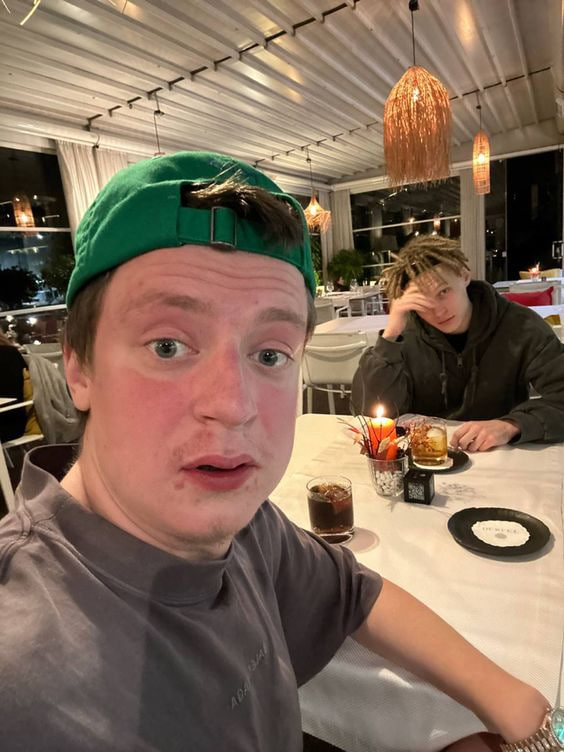
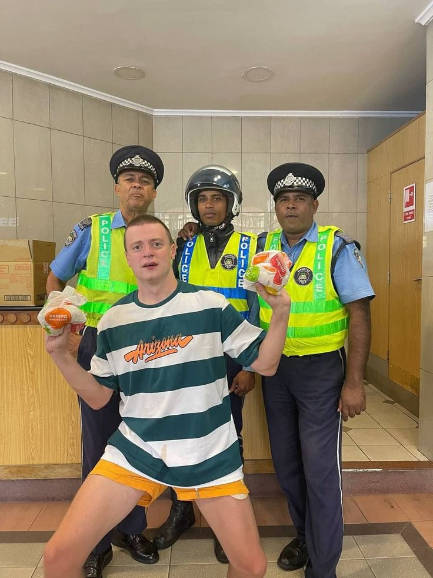
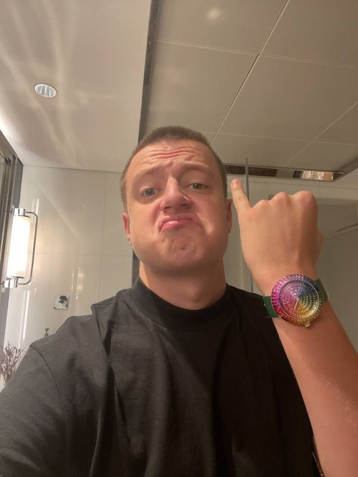

Набрать аудиторию блогеру удалось после того, как он начал вести эфиры, в которых просил девушек раздеться в обмен на подписки и лайки. Поскольку некоторые участницы откровенных видео оказались несовершеннолетними, на Андрея обратили внимание белорусские стражи правопорядка. Его обвиняли в распространении порнографии и провели обыск в квартире, в ходе которого изъяли компьютер. 
Бурим даже побывал в изоляторе временного содержания, от которого у него осталось наихудшее впечатление, но позже дело закрыли. Несмотря на то что страницы Mellstroy заблокировали, он вновь вернулся к созданию провокационного контента, поскольку это позволяло быстро набирать просмотры и увеличивать аудиторию.
На новом канале Андрей вел стримы, на которых знакомился с девушками, притворяясь сыном бизнесмена или больным ДЦП, и наблюдал за их реакцией. У таких видео нашлось немало поклонников, и вскоре ютьюбер начал зарабатывать на рекламе. Парень занимался продвижением онлайн-казино, из-за чего неоднократно подвергался осуждению со стороны других блогеров, считающих, что он обманывает подписчиков. Не менее порицаемыми интернет-сообществом стали розыгрыши, которые проводились в телеграм-канале Бурима. 
Со временем видео ютьюбера становились все провокационнее, но это не мешало Андрею набирать аудиторию. Mellstroy переехал в российскую столицу и начал снимать видео в башне «Федерация» в «Москва-Сити», демонстрируя роскошную жизнь. Он приглашал на стримы девушек и интернет-звезд, которым предлагал выполнять задания за деньги. В гостях у белоруса побывали Кирилл Терешин, Эдвард Бил и Катя Анохина. Часто желания Бурима носили интимный характер, что только подогревало интерес. 
В 2022-м во время трансляции блогер провел аукцион, представив в качестве лота автомобиль Maybach. Победителем розыгрыша становился тот, кто перечислил за время эфира самый большой донат. По результатам обладателем приза стал подписчик, переславший Mellstroy 1,6 млн рублей. Не менее щедрый сюрприз Андрей подготовил для Юрия Хованского, переведя тому $ 17,3 тыс., чтобы коллега мог купить квартиру в Сербии.